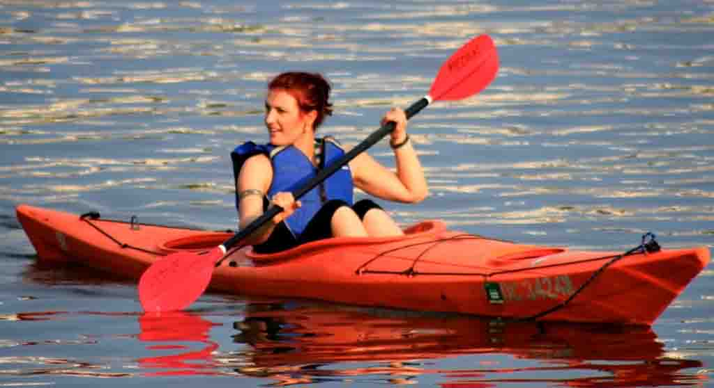
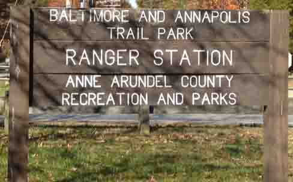
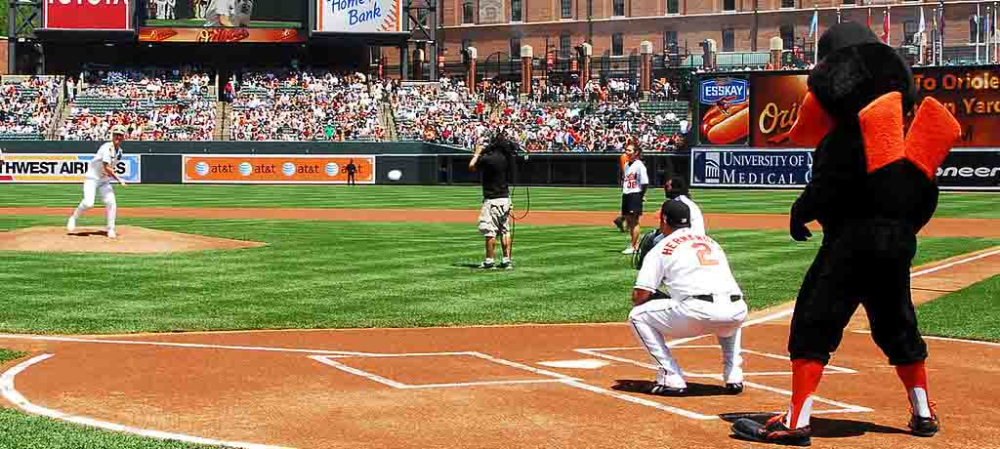

Outdoors
Annapolis
 Kayak Trips
Kayak Trips

Our first kayak trip of the year will be Saturday, May 6. We've partnered with Kayak Annapolis Tours for the summer, so you'll be able to get a discount on rentals if you go with us.
Our deal with Kayak Annapolis only allows us to take groups of 10 people, so sign up soon. The code for the sign up form is "May 6 Kayak Trip."
Can't make this trip? That's ok! The next kayaking trip is set for May 20. You can sign up for our newsletter or follow us on Facebook, Twitter, and Instagram for information on all of our trips.
Stretch your legs
While open year-round, the mild temperatures and blooming plant life make the Baltimore-Annapolis Trail especially beautiful in the springtime.
Whether your looking for a marathon training ground or an easy family stroll, this trail is perfect for everyone. Get out there and get moving!
The trail is 13.3-miles in Anne Arundel County, Maryland. It starts at Boulter's Way in Arnold and ends near Baltimore Light Rail's Cromwell Station in Glen Burnie.
Baltimore
Time for a ball game
What's a better way to kickoff spring than with an Orioles game at Camden Park Yards?
Take the Light Rail to Camden Yards, and enjoy the sun, food, and game with a group of new friends. Tickets are $20 per adult and $10 per child under the age of 12. Sign up to go to the game on Saturday, April 27. Payment is accepted in the form of cash on the day of the game. The activity code for the form is "April 12 Orioles Game."
Spring flower display at botanical gardens
The Howard Peters Rawlings Conservatory and Botanical Gardens is hosting its annual spring flower display from April 8 to April 23.
Hours
- Wed. - Sun.:
10am to 4pm - Music Days:
April 12 and April 28
According to the Conservatory's website, "Baltimore’s favorite harbinger of spring is the Conservatory’s annual bulb show. This showcase of unique varieties of tulips, hyacinths, daffodils, and grape hyacinths also features grasses, desert plants, and tillandsias grown in the Cylburn Arboretum’s greenhouses. The plant material, along with grand hand-made sea creatures, colorful crafts, and wonderful objects borrowed from Second Chance, Inc., will become an immersive experience in an underwater world."
Washington, D.C.
Time for the Cherry Blossom Festival!
Spring has arrived, and so have the Cherry Blossoms! Head into to the nation's capital to see this amazing sight in person.
The 2017 National Cherry Blossom Festival will last from March 17 to April 15. The best time to see the blooms is expected to be between March 20 and March 24.
Downtown D.C., will host a variety of activities from fundraiser marathons, parades, and concerts during the festival month. There will be a high-volume of visitors, as people come from around the world to the see the cherry blossoms. Consider taking the D.C. metro.
Horseback riding in the capital
We will soon be partners with Rock Creek Park Horse Center, located in Washington, D.C. We're still finalizing the details, but we will be offering discount packages for morning or afternoon group trail rides.
From Rock Creek Park Horse Center: Deep in the woods of Rock Creek Park, you can find peace in the company of horses and those who love them. We offer boarding, camps, lessons and trail rides for equestrians at all skill levels.